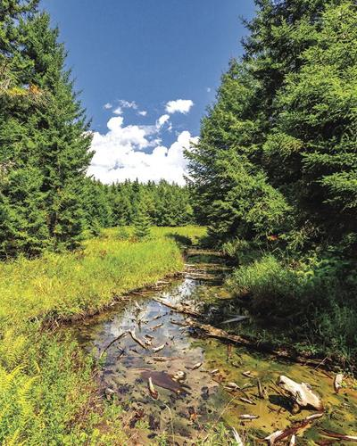
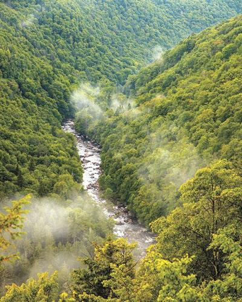
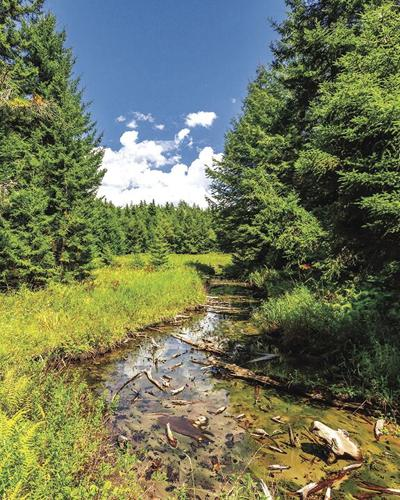
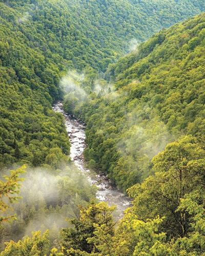
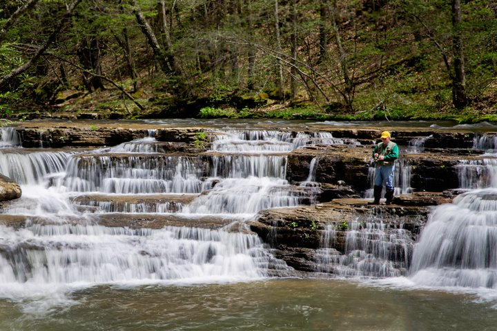
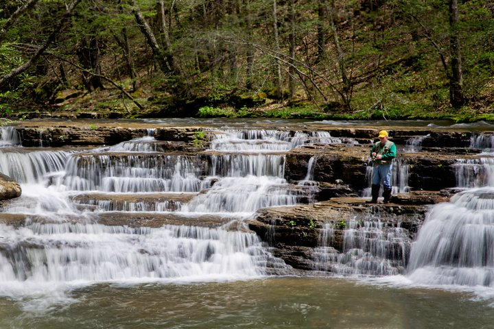

Welcome to the Mountain State

 



Source: WV News
West Virginia, often referred to as the "Mountain State," is known for its rich history, stunning landscapes, and vibrant culture. Nestled within the Appalachian Mountains, this state offers a unique blend of natural beauty and historical significance. From its rugged terrain to its deep-rooted traditions, West Virginia provides a picturesque and engaging experience for residents and visitors alike.
Geography
 


Source: Almost Heaven WV
West Virginia is located entirely within the Appalachian Region, and the state is almost entirely mountainous, giving reason for the nickname "The Mountain State" and the motto "Montani Semper Liberi" ("Mountaineers are always free"). About 75% of the state is within the Cumberland Plateau and Allegheny Plateau regions. The average elevation of West Virginia is approximately 1,500 feet (460 m) above sea level, the highest of any U.S. state east of the Mississippi River.
The highest point in the state is atop Spruce Knob at 4,863 feet (1,482 m), which lies within the Monongahela National Forest. The New River Gorge is a canyon 1,000 feet (300 m) deep, carved by the New River. The National Park Service manages a portion of the gorge and river designated as the New River Gorge National Park and Preserve.
West Virginia is also known for its caves and caverns, including Seneca Caverns and Smoke Hole Caverns. The state's karst topography has resulted in numerous sinkholes and underground drainage systems.
For more detailed information, you can refer to sources such as (Wikipedia contributors, 2024) and (Kiffel-Alcheh, 2021).
Culture
West Virginia's culture is a tapestry of Appalachian traditions, influenced by the diverse heritage of its settlers, including Scots-Irish, English, German, and Swiss communities. The state is renowned for its folk music, particularly old-time and bluegrass, which have roots in the music brought by Scottish and Irish settlers in the 18th century. African American influences can also be heard, especially in the use of banjo.
Traditional Appalachian crafts such as quilting, woodworking, and glassblowing are integral to West Virginia's cultural identity. Festivals throughout the state celebrate this heritage, like the Vandalia Gathering, which focuses on traditional music, dance, and crafts, and the Augusta Heritage Festival, the largest festival in West Virginia, showcasing Appalachian culture.
West Virginia also has a unique food culture, with pepperoni rolls being one of the most iconic state foods. This snack was first created as a lunch option for coal miners and has since become ubiquitous throughout the state.
The state is known for having an amiable and neighborly culture, with a strong sense of community attributed in part to the relative isolation of many areas within the mountains. This culture is often called "West Virginia Nice".
For more detailed information on West Virginia's culture, you can refer to sources such as (Tan, 2020), (West Virginia Holidays and Festivals, n.d.), (Nigel et al., 2023), and (Martis & Clagg, 2024).